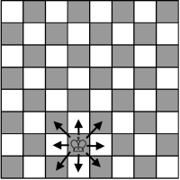
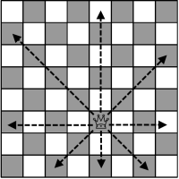
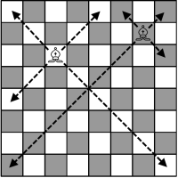
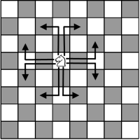
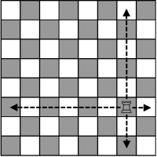
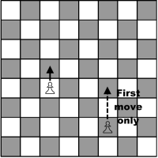
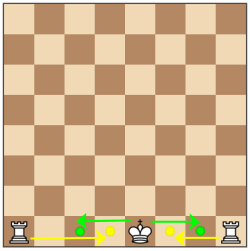

The Basics
Setting up the board

As seen above, both sides near identical, with the row closest to each player with the Rooks on the outside, Knights next to the Rooks, Bishops to the unoccupied side of the Knights, and the Queens go on the remaining tile that matches their colour, and King on the tile with the opposing colour. The row directly in front of those pieces are filled with pawns.
Objective of Chess
The main objective of Chess is to simply checkmate your opponent's King. A 'checkmate' is when the King is in check (under potential attack from an opposing chess piece) and the player can't make any move to remove the King from check. If a player mistakenly has their King captured when there was an opportunity to remove the King from check, all moves are re-done to when the player is to remove the King from check.
What each piece does
| King | The most valuable piece in terms of what you must keep safe from the enemy. The King is only able to move one space in any direction. |  |
| Queen | The most valuable piece in terms of attacking power. The Queen is able to move in any direction, and any amount of spaces. |  |
| Bishop | The Bishop is able to move in any diagonal direction, and any amount of spaces. |  |
| Knight | The Knight has the unique ability to be able to pass through other pieces. The Knight moves in an L shape, 2 spaces vertically and 1 space horizontally, or 2 spaces horizontally and 1 space vertically. |  |
| Rook | The Rook is able to move in any cardinal direction, and any amount of spaces. |  |
| Pawn | The Pawn is allowed to only move forward 1 space, however if the Pawn has not moved from its original position, it is able to move either 1 OR 2 spaces forward. Although being allowed to move forward, a Pawn may only capture an opposing piece that is 1 diagonal space ahead. |  |
Things most people don't know!
Castling: Castling is a special move performed by the Rook and involves the King aswell. If neither the Rook nor the King has moved yet from
their starting position, and there is a clear path between the Rook and King, the player may move the Rook to the King's starting position, and move
the King to the side closer to the Rook's starting position.

Multiple Queens: If your Pawn is promoted (by having your pawn reach the final row on the opposing side), that pawn may be promoted to a Queen
even if your Queen is still alive. This is usually represented with an inverted rook as most chess boards only come with a single Queen.
En Passant: A special pawn capture that can only occur immediately after a pawn makes a double-step move from its starting square, and it could
have been captured by an enemy pawn had it advanced only one square.